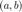
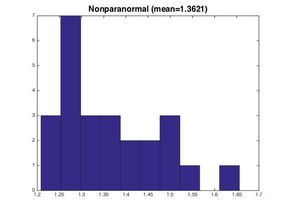

ROCKET: inference for graphical models (stock data demo)
Given a sparse undirected graphical model with covariance structure , we would like to perform statistical inference on the "edges" in the graph, i.e. test whether entries of are zero or nonzero.
ROCKET is a method for computing asymptotically normal estimates of each entry of , which is designed for the transelliptical model.
- Preprint: Barber & Kolar 2015, "ROCKET: Robust Confidence Intervals via Kendall?s Tau for Transelliptical Graphical Models", http://arxiv.org/abs/1502.07641
This script compares the ROCKET method with:
- a Gaussian graphical model method, which using Pearson's correlation rather than Kendall's tau, and is denoted as "Pearson" below (Ren et al 2015, "Asymptotic normality and optimalities in estimation of large gaussian graphical model.")
- the "nonparanormal" method, designed for nonparanormal i.e. Gaussian copula models. (Liu et al 2009, "The nonparanormal: Semiparametric estimation of high dimensional undirected graphs")
Contents
Setup: load in the stock data
This data set (obtained via the R package "huge", and sourced initially from Yahoo Finance) contains daily closing prices for 452 stocks over several years.
- The matrix "data" contains daily log-returns, that is, log(closing price of stock on day / closing price of stock on day )
- The vector "labels" contains stock category labels:
1 = Industrials 2 = Financials 3 = Health care 4 = Consumer discretionary 5 = Information technology 6 = Utilities 7 = Materials 8 = Consumer staples 9 = Telecommunications services 10 = Energy
data=dlmread('stock_logreturns.txt'); labels=dlmread('stock_categories.txt'); [N,P]=size(data);
Split into subsamples
We split the data set into subsamples each of size .
For a fast example, we will work only with the stocks in category 7 (Materials), for a total of stocks.
To reproduce the experiment in the ROCKET paper, keep categories 7 and 8, i.e. set keep_labels=[7 8], and set the random seed as seed=12345.
n=50; L=floor(N/n); seed=12345;rng(seed); split_sample=reshape(randsample(1:N,n*L),n,L); keep_labels=7; X=data(:,ismember(labels,keep_labels)); p=size(X,2); pC2=nchoosek(p,2);
Run each method
For each subsample , let denote the reduced data set from this subsample (a matrix) We run the method on the reduced data set to produce an estimate and an estimated variance of each edge parameter . This estimate and estimated variance are denoted by and
Then we compute a z-score,
We repeat this for all three methods, across subsamples and edges .
Running this on the stocks in category 7 only, this takes 5 minutes to run on a Macbook Pro.
zstat=zeros(L,pC2,3); tic; for l=1:L, edge_index=0; for a=1:(p-1), for b=(a+1):p, edge_index=edge_index+1; % ROCKET [est_value, est_variance] = teInference(X(split_sample(:,l),:),a,b,1,0); zstat(l,edge_index,1)=est_value/sqrt(est_variance); % Pearson [est_value, est_variance] = teInference(X(split_sample(:,l),:),a,b,1,1); zstat(l,edge_index,2)=est_value/sqrt(est_variance); % Nonparanormal [est_value, est_variance] = teInference(X(split_sample(:,l),:),a,b,1,2); zstat(l,edge_index,3)=est_value/sqrt(est_variance); end end end toc
Elapsed time is 261.664666 seconds.
Compute sample variances
For each method, and for each edge , the theory states that each is distributed (asymptotically) as a normal random variable with variance 1, and with a mean that is determined by the true edge parameter . (The mean is zero if , and is nonzero otherwise.)
Even though we do not know this mean (since we do not know which edges are nonzero), we can still check the variance: the vector should have a sample variance of roughly 1.
Here we calculate the sample variances, and for each method show the average sample variance (where the average is taken across all edges ).
sample_vars = sum(zstat.^2,2)/pC2 - (sum(zstat,2)/pC2).^2;
sample_vars = reshape(sample_vars,L,3);
disp(' ROCKET Pearson Nonparanormal')
disp(mean(sample_vars))
ROCKET Pearson Nonparanormal
1.0402 1.3848 1.3621
Plot sample variances
For each method, we plot a histogram the sample variance of the sequence , across all edges
Since these values are z-scores, the methods should ideally exhibit sample variances equal to 1 on average
figure hist(sample_vars(:,1)) title(strcat('ROCKET (mean=',num2str(mean(sample_vars(:,1)),5),')'),'FontSize',16) figure hist(sample_vars(:,2)) title(strcat('Pearson (mean=',num2str(mean(sample_vars(:,2)),5),')'),'FontSize',16) figure hist(sample_vars(:,3)) title(strcat('Nonparanormal (mean=',num2str(mean(sample_vars(:,3)),5),')'),'FontSize',16)